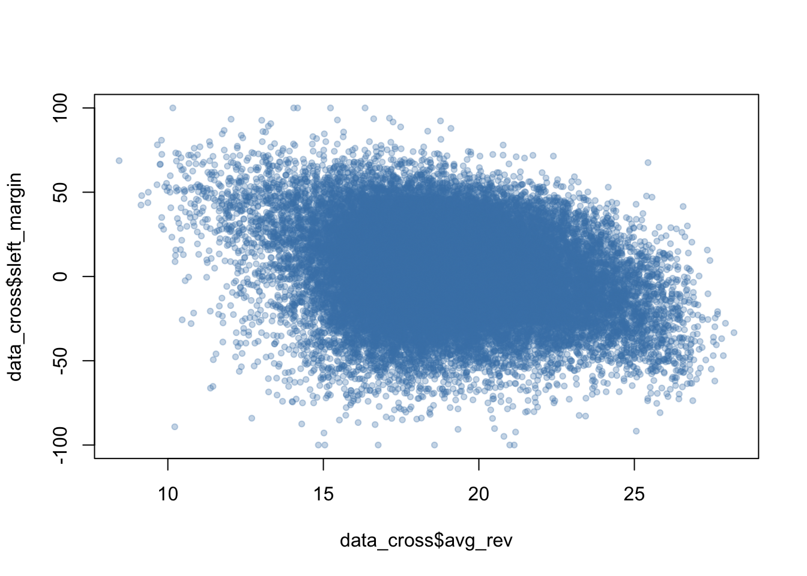
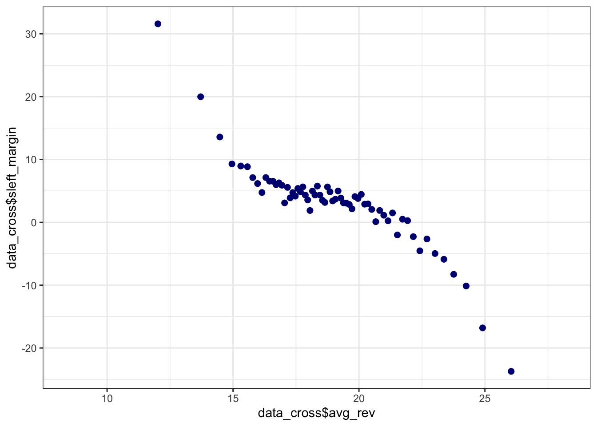
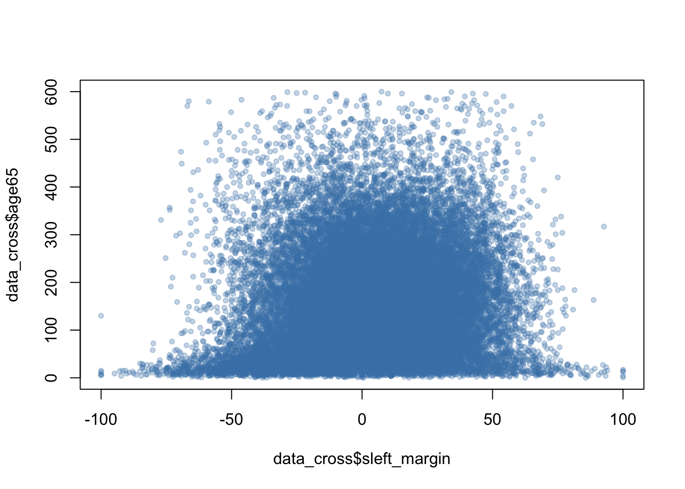

setwd("/Users/ademsamir/Downloads")
data_cross<-read.csv("cross_elections.csv", sep=",",header = TRUE)DM_Adem.Samir_Irbouh.Salim
1/ Statistiques descriptives :
1.A.
dim(data_cross) [1] 36362 25- La dimension est de 36 362 observations et 25 variables explicatives.
1.B.
View(data_cross) - L’unité d’observation est l’ID office, le bureau de vote.
1.C
l s’agit de données en coupe transversale, car on a plusieurs observations à un instant t.
On a 36 362 observations à l’instant 2012.
2.
mean(data_cross$registered)[1] 690.5241- La moyenne des personnes inscrites dans un bureau de vote est de 690,5241.
mean(data_cross$voters)[1] 386.0799- Le nombre moyen des votants est de 386,07. Nombre moyen de personnes ayant voté.
mean(data_cross$expressed)[1] 373.5677- Le nombre moyen des votes exprimés est de 373,57.
2.A.
- La différence entre les personnes inscrites et les personnes qui ont voté, c’est-à-dire la non-participation.
2.B.
- La différence entre le nombre de votants et le nombre de votes exprimés correspond au nombre de bulletins nuls ou blancs.
3.
mean(data_cross$cgender_left == 1, na.rm = TRUE)*100[1] 45.4788- Il y a 45,48 % de femmes qui sont candidates dans le parti socialiste.
mean(data_cross$cgender_right == 1, na.rm = TRUE)*100[1] 20.19966- Il y a 20,20 % des femmes qui sont candidates dans le parti UMP.
4.
table(data_cross$cgroups)
1 2 3 4
15609 3129 13408 4216 prop.table(table(data_cross$cgroups)) * 100
1 2 3 4
42.926682 8.605137 36.873659 11.594522 Il y a 42,9 % du groupe 1, 8,6 % du groupe 2, 36,9 % du groupe 3 et 11,6 % du groupe 4.
La répartition théorique des duels sans toute forme de discrimination doit être égale : 50 % d’hommes / 50 % de femmes chez les Socialistes, et 50 % d’hommes / 50 % de femmes chez les UMP.
Les duels Homme / Homme (42,9 %) sont surreprésentés et les duels Femme / Femme (8,6 %) sont sous-représentés, donc il y a une probable discrimination dans la désignation des candidats.
5.
tapply(data_cross$votes_left,data_cross$cgender_left,mean, ) 0 1
196.3628 198.2268 - Les femmes candidates socialistes ont obtenu en moyenne 198,23 voix, tandis que les hommes socialistes ont obtenu en moyenne 196,36 voix.
tapply(data_cross$votes_right,data_cross$cgender_right,mean, ) 0 1
174.3620 184.2391 - Les femmes candidates UMP ont obtenu en moyenne 184,24 voix, tandis que les hommes UMP ont obtenu en moyenne 174,36 voix.
6.
tapply(data_cross$svotes_left,data_cross$cgender_left,mean, ) 0 1
52.76148 50.19274 - On remarque 52,76 % des votes pour les hommes et 50,19 % des votes pour les femmes dans le parti socialiste.
tapply(data_cross$svotes_right,data_cross$cgender_right,mean, ) 0 1
48.78046 46.93040 - 48,78 % des personnes ont voté pour un homme, tandis que 46,93 % des votes ont été votés pour les femmes.
6. Réponse aux 3 questions :
Les femmes obtiennent en moyenne plus de voix que les hommes dans les deux partis, mais l’écart est très faible. Cela peut être dû à des biais de mesure ou à la taille de l’échantillon.
On remarque que les hommes ont un meilleur pourcentage moyen que les femmes dans chaque parti. Donc, les hommes gagnent plus souvent en proportion, même si les femmes ont parfois plus de voix en chiffres bruts.
Le nombre de voix brutes n’est pas une bonne mesure du succès, car il dépend de la taille de l’échantillon. Le pourcentage de voix est plus pertinent pour comparer les performances électorales.
C’est dû à un biais de sélection : les femmes candidates se présentent dans des endroits plus peuplés (variable omise), ce qui biaise la comparaison brute.
Grâce à l’utilisation du log, on atténue l’impact des très grandes valeurs, ce qui rend la comparaison hommes-femmes plus juste.
2/ régressions linéaires simples :
library(broom)
library(gt)
model1 <- lm(sleft_margin ~ groups,data_cross)
summary(model1)
Call:
lm(formula = sleft_margin ~ groups, data = data_cross)
Residuals:
Min 1Q Median 3Q Max
-112.516 -17.593 0.014 18.270 98.952
Coefficients:
Estimate Std. Error t value Pr(>|t|)
(Intercept) 3.6341 0.2095 17.34 <2e-16 ***
groups2_F_SOC_F_UMP -6.0870 0.5128 -11.87 <2e-16 ***
groups3_F_SOC_M_UMP -2.5863 0.3083 -8.39 <2e-16 ***
groups4_M_SOC_F_UMP 8.8818 0.4544 19.55 <2e-16 ***
---
Signif. codes: 0 '***' 0.001 '**' 0.01 '*' 0.05 '.' 0.1 ' ' 1
Residual standard error: 26.18 on 36358 degrees of freedom
Multiple R-squared: 0.02086, Adjusted R-squared: 0.02078
F-statistic: 258.2 on 3 and 36358 DF, p-value: < 2.2e-16tidy(model1) %>%
gt() %>%
tab_header(title = "régression de sleft_margin sur groups ")| régression de sleft_margin sur groups | ||||
| term | estimate | std.error | statistic | p.value |
|---|---|---|---|---|
| (Intercept) | 3.634143 | 0.2095493 | 17.342662 | 4.177454e-67 |
| groups2_F_SOC_F_UMP | -6.086987 | 0.5127966 | -11.870179 | 1.941470e-32 |
| groups3_F_SOC_M_UMP | -2.586296 | 0.3082695 | -8.389723 | 5.046364e-17 |
| groups4_M_SOC_F_UMP | 8.881824 | 0.4544045 | 19.546075 | 1.213288e-84 |
7.A.
- Le groupe de référence utilisé par le logiciel est le groupe avec le plus petit niveau, et c’est le groupe 1 qui est représenté en Bêta 0.
7.B.
B0 = 3,6, donc en moyenne la gauche a 3,6 points d’avance dans un duel homme/homme.
B1 = -6,08. Dans un duel femme/femme, la gauche a 6,08 points de pourcentage de moins (de retard) par rapport au duel homme/homme.
B2 = -2,59. Dans un duel femme/homme, la gauche a 2,59 points de pourcentage de moins (de retard) par rapport au duel homme/homme.
B3 = 8,88. Dans un duel homme/femme, la gauche a 8,88 points de pourcentage d’avance par rapport au duel homme/homme.
7.C.
- On remarque qu’au sein du groupe 4 politique, la préférence pour les candidats masculins semble être la plus marquée, car le coefficient du groupe 4 est plus élevé que le coefficient du groupe 3. Cela indique que la préférence pour les hommes est plus marquée chez les électeurs de gauche, et les femmes sont davantage pénalisées.
8.
model2 <- lm(svotes_right ~ groups,data_cross)
summary(model2)
Call:
lm(formula = svotes_right ~ groups, data = data_cross)
Residuals:
Min 1Q Median 3Q Max
-49.476 -9.135 -0.007 8.796 56.258
Coefficients:
Estimate Std. Error t value Pr(>|t|)
(Intercept) 48.1829 0.1048 459.87 <2e-16 ***
groups2_F_SOC_F_UMP 3.0435 0.2564 11.87 <2e-16 ***
groups3_F_SOC_M_UMP 1.2931 0.1541 8.39 <2e-16 ***
groups4_M_SOC_F_UMP -4.4409 0.2272 -19.55 <2e-16 ***
---
Signif. codes: 0 '***' 0.001 '**' 0.01 '*' 0.05 '.' 0.1 ' ' 1
Residual standard error: 13.09 on 36358 degrees of freedom
Multiple R-squared: 0.02086, Adjusted R-squared: 0.02078
F-statistic: 258.2 on 3 and 36358 DF, p-value: < 2.2e-16tidy(model2) %>%
gt() %>%
tab_header(title = " régression de svotes_right sur groups ")| régression de svotes_right sur groups | ||||
| term | estimate | std.error | statistic | p.value |
|---|---|---|---|---|
| (Intercept) | 48.182928 | 0.1047747 | 459.871918 | 0.000000e+00 |
| groups2_F_SOC_F_UMP | 3.043494 | 0.2563983 | 11.870179 | 1.941469e-32 |
| groups3_F_SOC_M_UMP | 1.293148 | 0.1541347 | 8.389723 | 5.046364e-17 |
| groups4_M_SOC_F_UMP | -4.440912 | 0.2272022 | -19.546075 | 1.213290e-84 |
model3 <- lm(svotes_left ~ groups,data_cross)
summary(model3)
Call:
lm(formula = svotes_left ~ groups, data = data_cross)
Residuals:
Min 1Q Median 3Q Max
-56.258 -8.796 0.007 9.135 49.476
Coefficients:
Estimate Std. Error t value Pr(>|t|)
(Intercept) 51.8171 0.1048 494.56 <2e-16 ***
groups2_F_SOC_F_UMP -3.0435 0.2564 -11.87 <2e-16 ***
groups3_F_SOC_M_UMP -1.2931 0.1541 -8.39 <2e-16 ***
groups4_M_SOC_F_UMP 4.4409 0.2272 19.55 <2e-16 ***
---
Signif. codes: 0 '***' 0.001 '**' 0.01 '*' 0.05 '.' 0.1 ' ' 1
Residual standard error: 13.09 on 36358 degrees of freedom
Multiple R-squared: 0.02086, Adjusted R-squared: 0.02078
F-statistic: 258.2 on 3 and 36358 DF, p-value: < 2.2e-16tidy(model3) %>%
gt() %>%
tab_header(title = "régression de svotes_left sur groups ")| régression de svotes_left sur groups | ||||
| term | estimate | std.error | statistic | p.value |
|---|---|---|---|---|
| (Intercept) | 51.817072 | 0.1047747 | 494.557242 | 0.000000e+00 |
| groups2_F_SOC_F_UMP | -3.043494 | 0.2563983 | -11.870178 | 1.941471e-32 |
| groups3_F_SOC_M_UMP | -1.293148 | 0.1541347 | -8.389723 | 5.046362e-17 |
| groups4_M_SOC_F_UMP | 4.440912 | 0.2272022 | 19.546075 | 1.213286e-84 |
Pour svotes_right, un homme UMP face à un homme PS obtient en moyenne 48,18 % des voix.
Pour svotes_left, un homme PS face à un homme UMP obtient 51,82 % des voix.
Quand la candidate socialiste est une femme (groupes 2 ou 3), elle obtient moins de voix que le candidat homme socialiste (groupe 1). Cela suggère une forme de désavantage électoral pour les femmes socialistes.
Quand la candidate UMP est une femme (groupe 4), elle obtient moins de voix que les hommes UMP. Cela pourrait également indiquer une préférence des électeurs pour les hommes UMP.
9.
model4 <- lm(sleft_margin ~ cgender_right * cgender_left,data_cross)
summary(model4)
Call:
lm(formula = sleft_margin ~ cgender_right * cgender_left, data = data_cross)
Residuals:
Min 1Q Median 3Q Max
-112.516 -17.593 0.014 18.270 98.952
Coefficients:
Estimate Std. Error t value Pr(>|t|)
(Intercept) 3.6341 0.2095 17.34 <2e-16 ***
cgender_right 8.8818 0.4544 19.55 <2e-16 ***
cgender_left -2.5863 0.3083 -8.39 <2e-16 ***
cgender_right:cgender_left -12.3825 0.6904 -17.93 <2e-16 ***
---
Signif. codes: 0 '***' 0.001 '**' 0.01 '*' 0.05 '.' 0.1 ' ' 1
Residual standard error: 26.18 on 36358 degrees of freedom
Multiple R-squared: 0.02086, Adjusted R-squared: 0.02078
F-statistic: 258.2 on 3 and 36358 DF, p-value: < 2.2e-16tidy(model4) %>%
gt() %>%
tab_header(title = "régression de sleft_margin sur cgender_right * cgender_left ")| régression de sleft_margin sur cgender_right * cgender_left | ||||
| term | estimate | std.error | statistic | p.value |
|---|---|---|---|---|
| (Intercept) | 3.634143 | 0.2095493 | 17.342662 | 4.177454e-67 |
| cgender_right | 8.881824 | 0.4544045 | 19.546075 | 1.213288e-84 |
| cgender_left | -2.586296 | 0.3082695 | -8.389723 | 5.046364e-17 |
| cgender_right:cgender_left | -12.382515 | 0.6903999 | -17.935280 | 1.274409e-71 |
B0 = 3,63 : toutes choses égales par ailleurs, quand les 2 candidats sont des hommes, la gauche gagne +3,63 points de pourcentage.
B1 = 8,88 : toutes choses égales par ailleurs, si la droite est une femme, la gauche gagne +8,88 pts de pourcentage.
B2 = -2,59 : toutes choses égales par ailleurs, si la gauche est une femme, la gauche perd −2,59 pts de pourcentage.
B3 = -12,38 : toutes choses égales par ailleurs, si les 2 sont des femmes, la gauche perd encore −12,38 pts de pourcentage.
On remarque une discrimination dans les votes. En effet, les femmes ont moins de voix par rapport aux hommes, et les duels 100 % féminins sont très défavorables à la gauche.
10.
left_win <- ifelse(data_cross$sleft_margin > 0, 1,
ifelse(data_cross$sleft_margin < 0, 0, NA))
sum(is.na(left_win))[1] 20410.A.
- 204 égalité
10.B.
gagnants_gauche <- subset(data_cross, left_win == 1)
table(gagnants_gauche$cgender_left)
0 1
11603 8202 - On a 11 603 gagnants hommes de gauche et 8 202 gagnantes femmes de gauche.
11.
model5 <-glm(left_win ~ factor(data_cross$groups), family = binomial(link = "logit"))
summary(model5)
Call:
glm(formula = left_win ~ factor(data_cross$groups), family = binomial(link = "logit"))
Coefficients:
Estimate Std. Error z value Pr(>|z|)
(Intercept) 0.25276 0.01619 15.615 <2e-16 ***
factor(data_cross$groups)2_F_SOC_F_UMP -0.41486 0.03942 -10.523 <2e-16 ***
factor(data_cross$groups)3_F_SOC_M_UMP -0.22292 0.02370 -9.404 <2e-16 ***
factor(data_cross$groups)4_M_SOC_F_UMP 0.52690 0.03701 14.238 <2e-16 ***
---
Signif. codes: 0 '***' 0.001 '**' 0.01 '*' 0.05 '.' 0.1 ' ' 1
(Dispersion parameter for binomial family taken to be 1)
Null deviance: 49796 on 36157 degrees of freedom
Residual deviance: 49265 on 36154 degrees of freedom
(204 observations effacées parce que manquantes)
AIC: 49273
Number of Fisher Scoring iterations: 4tidy(model5) %>%
gt() %>%
tab_header(title = "régression de left_win sur factor(data_cross$groups) ")| régression de left_win sur factor(data_cross$groups) | ||||
| term | estimate | std.error | statistic | p.value |
|---|---|---|---|---|
| (Intercept) | 0.2527553 | 0.01618658 | 15.615119 | 5.743825e-55 |
| factor(data_cross$groups)2_F_SOC_F_UMP | -0.4148552 | 0.03942275 | -10.523242 | 6.751000e-26 |
| factor(data_cross$groups)3_F_SOC_M_UMP | -0.2229203 | 0.02370442 | -9.404164 | 5.244552e-21 |
| factor(data_cross$groups)4_M_SOC_F_UMP | 0.5268969 | 0.03700669 | 14.237881 | 5.331952e-46 |
11.A.
- On l’appelle le modèle logit. C’est pour transformer une variable en binaire et obtenir des résultats en probabilités, à l’aide du modèle linéaire généralisé, car RStudio est programmé pour cela.
11.B
B0 chapeau : la probabilité que la gauche gagne dans un duel Homme PS / Homme UMP est de 0,25.
B1 : la probabilité que la gauche gagne dans un duel Femme PS / Femme UMP est faible, à moins 0,41.
B2: la probabilité que la gauche gagne dans un duel Femme PS / Homme UMP est faible, à moins 0,22.
B3 : la probabilité que la gauche gagne dans un duel Homme PS / Femme UMP est de 0,53.
3/ régressions linéaires multiples :
12.
tapply(data_cross$depenses_right, data_cross$cgender_right, mean, na.rm = TRUE) 0 1
42284.68 35512.46 tapply(data_cross$depenses_left, data_cross$cgender_left, mean, na.rm = TRUE) 0 1
37743.81 33460.43 Le montant des dépenses moyennes des candidates de droite est de 42 284,68 €, tandis que pour les hommes il est de 35 512,46 €.
Le montant des dépenses moyennes des candidates de gauche est de 37 743,81 €, tandis que pour les hommes il est de 33 460,43 €.
On a choisi ces variables pour voir leur effet direct ou indirect sur les élections.
13.
diff_depenses <- data_cross$depenses_left - data_cross$depenses_right
mean(diff_depenses, na.rm = TRUE)[1] -5121.742- Donc, les candidats de gauche dépensent moins, car le chiffre est négatif.
14.
model6<- lm(sleft_margin ~ groups + diff_depenses, data_cross)
summary(model6)
Call:
lm(formula = sleft_margin ~ groups + diff_depenses, data = data_cross)
Residuals:
Min 1Q Median 3Q Max
-116.340 -17.330 0.113 18.196 100.361
Coefficients:
Estimate Std. Error t value Pr(>|t|)
(Intercept) 4.519e+00 2.108e-01 21.432 < 2e-16 ***
groups2_F_SOC_F_UMP -5.524e+00 5.093e-01 -10.847 < 2e-16 ***
groups3_F_SOC_M_UMP -1.317e+00 3.100e-01 -4.248 2.17e-05 ***
groups4_M_SOC_F_UMP 6.795e+00 4.585e-01 14.820 < 2e-16 ***
diff_depenses 2.265e-04 9.098e-06 24.892 < 2e-16 ***
---
Signif. codes: 0 '***' 0.001 '**' 0.01 '*' 0.05 '.' 0.1 ' ' 1
Residual standard error: 25.96 on 36347 degrees of freedom
(10 observations effacées parce que manquantes)
Multiple R-squared: 0.03727, Adjusted R-squared: 0.03716
F-statistic: 351.8 on 4 and 36347 DF, p-value: < 2.2e-16tidy(model6) %>%
gt() %>%
tab_header(title = "régression de sleft_margin sur groups + diff_depenses ")| régression de sleft_margin sur groups + diff_depenses | ||||
| term | estimate | std.error | statistic | p.value |
|---|---|---|---|---|
| (Intercept) | 4.5188365583 | 2.108463e-01 | 21.431899 | 2.858870e-101 |
| groups2_F_SOC_F_UMP | -5.5239334477 | 5.092695e-01 | -10.846779 | 2.275315e-27 |
| groups3_F_SOC_M_UMP | -1.3165965314 | 3.099669e-01 | -4.247539 | 2.166681e-05 |
| groups4_M_SOC_F_UMP | 6.7951902865 | 4.585004e-01 | 14.820469 | 1.507919e-49 |
| diff_depenses | 0.0002264627 | 9.097658e-06 | 24.892424 | 1.234034e-135 |
14.A.
- On ajoute une variable de contrôle pour mieux isoler l’effet direct entre sleft margin et groups, et pour corriger le biais d’omission.
14.B.
- Parce que la variable “diff dépenses” a une unité petite (euros) ; elle est exprimée en euros et non en milliers d’euros, donc cela ne sert à rien de voir l’effet d’une augmentation de 1 euro.
15.
diff_depenses_thd <-diff_depenses / 1000 - La variable “diff dépenses” est exprimée en “k€” (par exemple, 10 k€), et non en 1 €.
model7 <-lm(sleft_margin ~ groups + diff_depenses_thd, data = data_cross)
summary(model7)
Call:
lm(formula = sleft_margin ~ groups + diff_depenses_thd, data = data_cross)
Residuals:
Min 1Q Median 3Q Max
-116.340 -17.330 0.113 18.196 100.361
Coefficients:
Estimate Std. Error t value Pr(>|t|)
(Intercept) 4.518837 0.210846 21.432 < 2e-16 ***
groups2_F_SOC_F_UMP -5.523933 0.509269 -10.847 < 2e-16 ***
groups3_F_SOC_M_UMP -1.316597 0.309967 -4.248 2.17e-05 ***
groups4_M_SOC_F_UMP 6.795190 0.458500 14.820 < 2e-16 ***
diff_depenses_thd 0.226463 0.009098 24.892 < 2e-16 ***
---
Signif. codes: 0 '***' 0.001 '**' 0.01 '*' 0.05 '.' 0.1 ' ' 1
Residual standard error: 25.96 on 36347 degrees of freedom
(10 observations effacées parce que manquantes)
Multiple R-squared: 0.03727, Adjusted R-squared: 0.03716
F-statistic: 351.8 on 4 and 36347 DF, p-value: < 2.2e-16tidy(model7) %>%
gt() %>%
tab_header(title = "régression de sleft_margin sur groups + diff_depenses_thd ")| régression de sleft_margin sur groups + diff_depenses_thd | ||||
| term | estimate | std.error | statistic | p.value |
|---|---|---|---|---|
| (Intercept) | 4.5188366 | 0.210846298 | 21.431899 | 2.858870e-101 |
| groups2_F_SOC_F_UMP | -5.5239334 | 0.509269480 | -10.846779 | 2.275315e-27 |
| groups3_F_SOC_M_UMP | -1.3165965 | 0.309966873 | -4.247539 | 2.166681e-05 |
| groups4_M_SOC_F_UMP | 6.7951903 | 0.458500368 | 14.820469 | 1.507919e-49 |
| diff_depenses_thd | 0.2264627 | 0.009097658 | 24.892424 | 1.234034e-135 |
- On a changé l’unité de la variable “diff dépenses” en milliers d’euros, donc une différence de 1 000 € augmente la marge de gauche de X points, au lieu de dire qu’une différence de 1 € augmente la marge de gauche de X points.
16.A.
- Une forte corrélation entre les variables explicatives avg_rev et age65 pose un problème de multicolinéarité, car les deux variables sont fortement corrélées.
16.B.
- On peut tester la corrélation entre elles avec la commande cor().
16.C.
cor(data_cross$age65, data_cross$avg_rev, use = "complete.obs")[1] 0.1036926- On remarque que la corrélation est faible et positive, donc cela ne pose pas de problème, et il n’y a pas de multicolinéarité préoccupante entre ces deux variables dans ce cas.
17.
plot(data_cross$avg_rev, data_cross$sleft_margin,pch = 20 , col = rgb(70/255, 130/255, 180/255, 0.3))
17.A.
- Non, il n’est pas facile d’observer une relation claire entre les deux variables dans le nuage de points, car le nuage est trop dispersé et peu clair.
17.B.
#install.packages("binsreg")
library(binsreg)
binsglm(data_cross$sleft_margin, data_cross$avg_rev)Warning in binsglm(data_cross$sleft_margin, data_cross$avg_rev): To speed up
computation, bin/degree selection uses a subsample of roughly max(5000, 0.01n)
observations if the sample size n>5000. To use the full sample, set randcut=1.
Call: binsglm
Binscatter Plot
Bin/Degree selection method (binsmethod) = IMSE direct plug-in (select # of bins)
Placement (binspos) = Quantile-spaced
Derivative (deriv) = 0
Group (by) = Full Sample
Sample size (n) = 33583
# of distinct values (Ndist) = 33581
# of clusters (Nclust) = NA
dots, degree (p) = 0
dots, smooth (s) = 0
# of bins (nbins) = 65- Quand le revenu moyen augmente, la marge de la gauche a tendance à diminuer. Donc, dans les zones les plus riches, on vote moins pour la gauche.
18.
plot(data_cross$sleft_margin, data_cross$age65,pch = 20 , col = rgb(70/255, 130/255, 180/255, 0.3))
- On remarque une relation non linéaire entre les deux variables.
18.B.
- Une transformation quadratique sur la variable age65.
18.C.
data_cross$age65_trans<- data_cross$age65^219.
model8 <- lm(sleft_margin ~ groups + diff_depenses_thd + avg_rev + age65 + age65_trans,data_cross)
summary(model8)
Call:
lm(formula = sleft_margin ~ groups + diff_depenses_thd + avg_rev +
age65 + age65_trans, data = data_cross)
Residuals:
Min 1Q Median 3Q Max
-124.016 -16.150 0.075 16.456 98.271
Coefficients:
Estimate Std. Error t value Pr(>|t|)
(Intercept) 4.068e+01 9.371e-01 43.411 < 2e-16 ***
groups2_F_SOC_F_UMP -4.473e+00 4.974e-01 -8.993 < 2e-16 ***
groups3_F_SOC_M_UMP -1.279e+00 3.006e-01 -4.255 2.09e-05 ***
groups4_M_SOC_F_UMP 7.626e+00 4.433e-01 17.202 < 2e-16 ***
diff_depenses_thd 1.982e-01 8.848e-03 22.395 < 2e-16 ***
avg_rev -2.582e+00 4.920e-02 -52.482 < 2e-16 ***
age65 1.420e-01 3.548e-03 40.036 < 2e-16 ***
age65_trans -2.572e-04 8.359e-06 -30.775 < 2e-16 ***
---
Signif. codes: 0 '***' 0.001 '**' 0.01 '*' 0.05 '.' 0.1 ' ' 1
Residual standard error: 24.07 on 33456 degrees of freedom
(2898 observations effacées parce que manquantes)
Multiple R-squared: 0.1461, Adjusted R-squared: 0.146
F-statistic: 818.1 on 7 and 33456 DF, p-value: < 2.2e-16tidy(model8) %>%
gt() %>%
tab_header(title = "régression de sleft_margin sur groups + diff_depenses_thd + avg_rev + age65 + age65_trans ")| régression de sleft_margin sur groups + diff_depenses_thd + avg_rev + age65 + age65_trans | ||||
| term | estimate | std.error | statistic | p.value |
|---|---|---|---|---|
| (Intercept) | 40.6826709932 | 9.371434e-01 | 43.411361 | 0.000000e+00 |
| groups2_F_SOC_F_UMP | -4.4730781907 | 4.973820e-01 | -8.993244 | 2.523456e-19 |
| groups3_F_SOC_M_UMP | -1.2791372769 | 3.005902e-01 | -4.255419 | 2.092254e-05 |
| groups4_M_SOC_F_UMP | 7.6259136121 | 4.433174e-01 | 17.201928 | 4.943859e-66 |
| diff_depenses_thd | 0.1981606221 | 8.848408e-03 | 22.395059 | 2.848815e-110 |
| avg_rev | -2.5822574161 | 4.920307e-02 | -52.481631 | 0.000000e+00 |
| age65 | 0.1420280593 | 3.547522e-03 | 40.035852 | 0.000000e+00 |
| age65_trans | -0.0002572465 | 8.359048e-06 | -30.774614 | 4.181025e-205 |
B0 : s’interprète comme la marge moyenne de la gauche en pourcentage dans le groupe de référence, quand toutes les autres variables explicatives sont à 0. On observe une augmentation de 40,68 points de pourcentage de la marge moyenne de la gauche dans le groupe Homme / Homme, lorsque les autres variables explicatives sont à 0.
B1 : Quand deux femmes s’affrontent (Femme PS / Femme UMP), la candidate PS a une marge électorale inférieure de 4,47 points de pourcentage en moyenne par rapport au duel de référence Homme PS / Homme UMP, toutes choses égales par ailleurs.
B2 : Quand une femme affronte un homme (Femme PS / Homme UMP), la candidate PS a une marge électorale inférieure de 1,29 points de pourcentage en moyenne par rapport au duel de référence Homme PS / Homme UMP, toutes choses égales par ailleurs.
B3 : Quand un homme affronte une femme (Homme PS / Femme UMP), la candidate PS a une marge électorale supérieure de 7,62 points de pourcentage en moyenne par rapport au duel de référence Homme PS / Homme UMP, toutes choses égales par ailleurs.
B4 : Toutes choses égales par ailleurs, une augmentation de 1000 K€ des dépenses du candidat de gauche par rapport à celui de droite augmente la marge de gauche de 0,198 points de pourcentage en moyenne.
B5 : Toutes choses égales par ailleurs, une hausse de 1000K€ du revenu moyen par habitant est associée à une baisse de 2.58 points de la marge du candidat de gauche.
B6 : Toutes choses égales par ailleurs, une augmentation d’une personne de plus âgée de 65 ans est associée à une hausse moyenne de 0,142 points de pourcentage de la marge électorale du candidat de gauche.
B7 : La relation entre la variable sleft_margin et l’âge est non linéaire mais concave, avec un effet positif qui ralentit et devient négatif à un certain seuil, car le coefficient est négatif.
20.
model9 <- lm(sleft_margin ~ groups + diff_depenses_thd + lavg_rev + age65 + age65_trans,data_cross)
summary(model9)
Call:
lm(formula = sleft_margin ~ groups + diff_depenses_thd + lavg_rev +
age65 + age65_trans, data = data_cross)
Residuals:
Min 1Q Median 3Q Max
-124.330 -16.189 0.045 16.541 98.272
Coefficients:
Estimate Std. Error t value Pr(>|t|)
(Intercept) 4.630e+02 8.997e+00 51.463 < 2e-16 ***
groups2_F_SOC_F_UMP -4.462e+00 4.977e-01 -8.966 < 2e-16 ***
groups3_F_SOC_M_UMP -1.281e+00 3.008e-01 -4.258 2.07e-05 ***
groups4_M_SOC_F_UMP 7.438e+00 4.433e-01 16.781 < 2e-16 ***
diff_depenses_thd 2.014e-01 8.849e-03 22.759 < 2e-16 ***
lavg_rev -4.788e+01 9.193e-01 -52.085 < 2e-16 ***
age65 1.409e-01 3.547e-03 39.712 < 2e-16 ***
age65_trans -2.558e-04 8.362e-06 -30.591 < 2e-16 ***
---
Signif. codes: 0 '***' 0.001 '**' 0.01 '*' 0.05 '.' 0.1 ' ' 1
Residual standard error: 24.09 on 33456 degrees of freedom
(2898 observations effacées parce que manquantes)
Multiple R-squared: 0.1452, Adjusted R-squared: 0.145
F-statistic: 811.6 on 7 and 33456 DF, p-value: < 2.2e-16tidy(model9) %>%
gt() %>%
tab_header(title = "régression de sleft_margin sur groups + diff_depenses_thd + lavg_rev + age65 + age65_trans ")| régression de sleft_margin sur groups + diff_depenses_thd + lavg_rev + age65 + age65_trans | ||||
| term | estimate | std.error | statistic | p.value |
|---|---|---|---|---|
| (Intercept) | 4.629969e+02 | 8.996763e+00 | 51.46261 | 0.000000e+00 |
| groups2_F_SOC_F_UMP | -4.462210e+00 | 4.977029e-01 | -8.96561 | 3.241931e-19 |
| groups3_F_SOC_M_UMP | -1.280728e+00 | 3.007688e-01 | -4.25818 | 2.066594e-05 |
| groups4_M_SOC_F_UMP | 7.438200e+00 | 4.432558e-01 | 16.78083 | 6.102099e-63 |
| diff_depenses_thd | 2.013982e-01 | 8.848989e-03 | 22.75945 | 8.481224e-114 |
| lavg_rev | -4.787925e+01 | 9.192521e-01 | -52.08500 | 0.000000e+00 |
| age65 | 1.408618e-01 | 3.547120e-03 | 39.71160 | 0.000000e+00 |
| age65_trans | -2.557873e-04 | 8.361587e-06 | -30.59076 | 1.015525e-202 |
- B5 : Une augmentation de 1 % du revenu moyen par habitant est associée à une baisse de 47,88 points de la marge électorale du candidat de gauche, toutes choses égales par ailleurs.
21.
Les limites sont :
les variables omises, certains facteurs ne sont pas inclus dans le modèle tels que l’expérience, la notoriété.
la qualité de l’échantillon : ici on se base uniquement sur une seule élection.
corrélation ≠ causalité : certes les coefficients sont significatifs et on observe des corrélations, mais on ne peut pas affirmer que le genre cause une moindre performance électorale.
4/ Partie données de panel :
setwd("/Users/ademsamir/Downloads")
data_panel<- read.csv("panel_elections.csv", sep=",",header = TRUE)22.
- Si les femmes sont souvent désignées candidates lors des élections difficiles à gagner, donc on aura un biais de sélection endogène (une corrélation entre la variable explicative et le terme d’erreur). Le genre du candidat (les femmes) est corrélé avec la difficulté de l’élection.
23.
- Limiter le biais de variables omises en contrôlant les effets des inobservables et d’observer l’évolution dans le temps.
24.A.
model10<- lm(sleft_margin ~ groups * time, data = data_panel)
summary(model10)
Call:
lm(formula = sleft_margin ~ groups * time, data = data_panel)
Residuals:
Min 1Q Median 3Q Max
-112.516 -16.410 0.007 16.690 99.120
Coefficients:
Estimate Std. Error t value Pr(>|t|)
(Intercept) 0.8802 0.1983 4.438 9.10e-06 ***
groups2_F_SOC_F_UMP -5.3321 0.4854 -10.985 < 2e-16 ***
groups3_F_SOC_M_UMP -0.9454 0.2918 -3.240 0.0012 **
groups4_M_SOC_F_UMP 4.1372 0.4301 9.619 < 2e-16 ***
time 2.7539 0.2805 9.818 < 2e-16 ***
groups2_F_SOC_F_UMP:time -0.7549 0.6864 -1.100 0.2715
groups3_F_SOC_M_UMP:time -1.6409 0.4127 -3.976 7.00e-05 ***
groups4_M_SOC_F_UMP:time 4.7446 0.6083 7.800 6.26e-15 ***
---
Signif. codes: 0 '***' 0.001 '**' 0.01 '*' 0.05 '.' 0.1 ' ' 1
Residual standard error: 24.78 on 72714 degrees of freedom
(2 observations effacées parce que manquantes)
Multiple R-squared: 0.01817, Adjusted R-squared: 0.01807
F-statistic: 192.2 on 7 and 72714 DF, p-value: < 2.2e-16tidy(model10) %>%
gt() %>%
tab_header(title = "régression de sleft_margin sur groups * time ")| régression de sleft_margin sur groups * time | ||||
| term | estimate | std.error | statistic | p.value |
|---|---|---|---|---|
| (Intercept) | 0.8802277 | 0.1983461 | 4.437838 | 9.100025e-06 |
| groups2_F_SOC_F_UMP | -5.3321335 | 0.4853806 | -10.985469 | 4.723118e-28 |
| groups3_F_SOC_M_UMP | -0.9453794 | 0.2918000 | -3.239820 | 1.196588e-03 |
| groups4_M_SOC_F_UMP | 4.1371799 | 0.4301103 | 9.618881 | 6.858065e-22 |
| time | 2.7539157 | 0.2805037 | 9.817753 | 9.755146e-23 |
| groups2_F_SOC_F_UMP:time | -0.7548536 | 0.6864318 | -1.099678 | 2.714763e-01 |
| groups3_F_SOC_M_UMP:time | -1.6409163 | 0.4126592 | -3.976444 | 7.002094e-05 |
| groups4_M_SOC_F_UMP:time | 4.7446441 | 0.6082678 | 7.800255 | 6.259925e-15 |
B0 = 3.6 : Toute chose égale par ailleurs, en moyenne, dans un duel entre un homme socialiste et un homme UMP, la gauche dispose d’une avance de 3.6 points.
B1 = -6.08 : Toute chose égale par ailleurs, lorsqu’on a un duel entre deux femmes (socialiste et UMP), la gauche enregistre une marge inférieure de 6.08 points par rapport à un duel homme/homme.
B2 = -2.59 : Toute chose égale par ailleurs, dans un duel où la candidate socialiste est une femme et le candidat UMP un homme, la gauche a 2.59 points de moins en moyenne que dans un duel homme/homme.
B3 = 8.88 : Toute chose égale par ailleurs, à l’inverse, lorsqu’un homme socialiste affronte une femme UMP, la gauche bénéficie d’un avantage moyen de 8.88 points supplémentaires par rapport au duel homme/homme.
B4 = 2.75 : Toute chose égale par ailleurs, entre la présidentielle (t = 0) et la législative (t = 1), la gauche gagne en moyenne 2.75 points dans les duels homme/homme.
B5 = -0.75 : Toute chose égale par ailleurs, pour les duels femme PS / femme UMP, le changement entre présidentielle et législative suit une baisse de 0.75 point pour la gauche par rapport au duel de référence, et le résultat n’est pas significatif.
B6 = -1.64 : Toute chose égale par ailleurs, pour les duels femme PS / homme UMP, le changement entre présidentielle et législative suit une baisse de 1.64 point pour la gauche par rapport au duel de référence.
B7 = 4.74 : Toute chose égale par ailleurs, pour les duels Homme PS / Femme UMP, le changement entre présidentielle et législative suit une augmentation de 4.74 points pour la gauche par rapport au duel de référence.
24.B.
- Oui, le fait que le coefficient d’interaction Femme/Femme × t = 1 ne soit pas significatif car si les performances électorales de la gauche dans les duels Femme/Femme n’ont pas changé entre les deux élections (ou ont évolué comme celles du groupe de référence), alors le coefficient d’interaction est non significatif.
25.
- Le coefficient de la variable time est positif (2.75), ce qui signifie que, toutes choses égales par ailleurs, la gauche a en moyenne gagné environ 2.75 points supplémentaires lors de l’élection législative (t = 1) par rapport à l’élection présidentielle (t = 0). Cela peut s’expliquer par le fait qu’aux législatives, les enjeux locaux ou les alliances stratégiques favorisent davantage la gauche.
26.
1-
On remarque un désavantage électoral pour les femmes socialistes car ont en général moins de voix en termes de part des voix exprimées par rapport aux hommes dans les mêmes partis. Mais aussi pour les femmes UMP obtiennent une proportion votes inférieure au hommes en termes de pourcentage.
Les modèles de régressions linéaires et logistiques montrent une un déséquilibre de performance entre hommes et femmes dans les différents groupes politiques.
les duels homme/homme et femme/femme entre groupe politique ont montré une potentiel discrimination.
2- Effet des variables de contrôle :
On a contrôlé la variable dépenses et le revenu moyen. On a observé que les électeurs les plus riches ont tendance à soutenir moins la gauche. On a observé aussi qu’une augmentation des dépenses du candidat de gauche par rapport à celui de droite fait augmenter la marge de la gauche faiblement.
On a compris que certaines variables omises peuvent influer, dont le genre en soi, les femmes étant vues dans l’élection.
3- Interaction entre genre et le temps :
- En utilisant les données de panel, on a observé qu’il y a une discrimination entre les deux genres, car les femmes dans les deux groupes obtiennent des résultats négatifs en termes de marge électorale, malgré une légère amélioration au fil du temps. Cependant, cela reste négatif pour les femmes, même après avoir intégré l’évolution temporelle.
4- Limites de l’analyse économétrique :
1- Biais de variables omises : des variables comme l’expérience peuvent biaiser les résultats.
2- Biais de sélection : ce biais peut exister si les femmes ont tendance à se présenter dans des élections plus difficiles.
3- Interprétation causale : le modèle nous donne des interprétations et des résultats significatifs, mais la corrélation ne signifie pas nécessairement causalité. D’autres facteurs externes peuvent expliquer cette corrélation.
5- Les outils :
Modèle de régression linéaire simple et multiple : ce modèle nous a permis d’étudier la relation entre le genre et leur performance en contrôlant certaines variables.
Modèle de régression logistique : pour estimer la probabilité de victoire d’un candidat de gauche en fonction d’autres variables.
Régression en modèle de panel : nous a permis de suivre l’évolution électorale à travers le temps en introduisant les interactions entre le temps afin d’analyser l’évolution de la performance des candidats en fonction de ces facteurs.